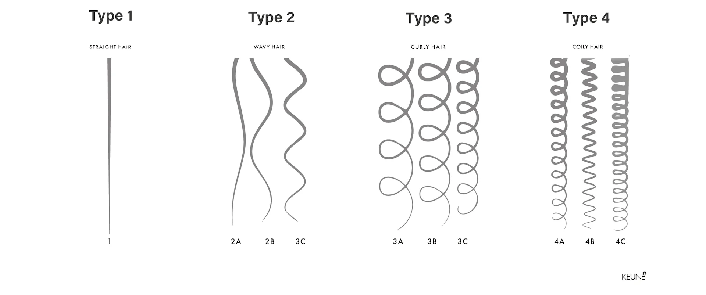

Please tell us your age.
It'll help us provide the best results.
Please tell us about your preferences
It'll help us provide the best results.
What is your natural hair type?

How would you describe your scalp condition?
Do you experience any scalp concerns?
You can choose multiple options or nothing.
Have you had any hair treatments such as keratin, protein, or Botox?
How often do you wash your hair?
Do you use any Sulfate-Free shampoos in your current wash routines?
How often do you use heat styling tools (hair dryer, flat iron)?
Which products are currently part of your hair care routine?
You can choose multiple options.
What is your hair strand thickness?
What hair concerns do you currently have?
You can choose multiple options or nothing
What styling products do you usually use?
You can choose multiple options or nothing.